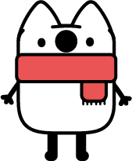
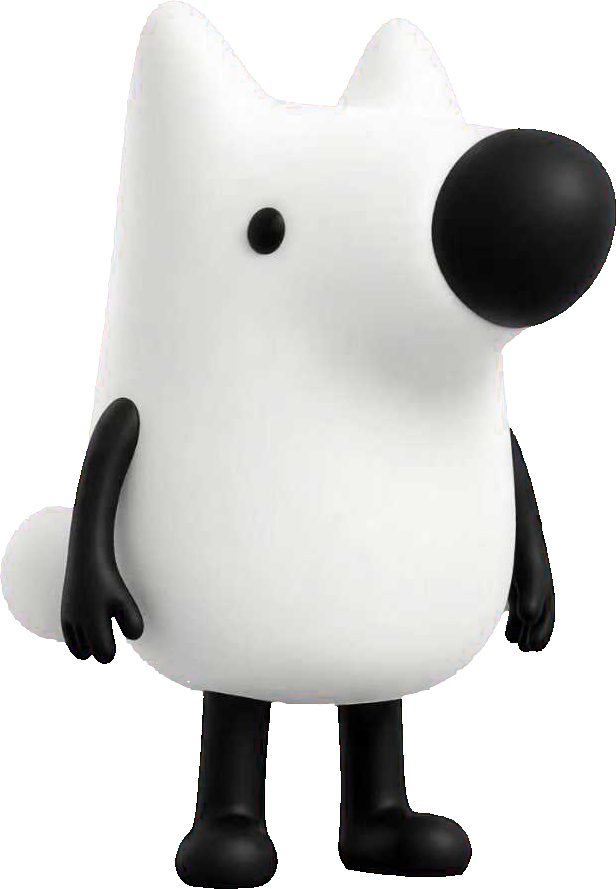

看山带你看老梗
知·乎·老·梗·录
深夜里飘着一串字。
每一个，都是
知乎人自己的暗号
——点开，看看它是从哪儿来、又怎么被玩坏的。
——
刘看山 主编
——
历史
0
↻
抽签
轻点一个气泡，它便应声而破
✳ ✳ ✳
这一批的老梗都戳破啦
点上面的 ↻ ，再换一批

← 返回
⤴
☆
谢邀，人在美国，刚下飞机
句式
来龙去脉
使用场景
知乎直答 · 实时解读
LIVE
— · — · — · —
衍生与变体
· 以上。
—— 看山带你看老梗 ——
×
今 日 梗 签
— · — · —
再抽一签
看看这个梗
保存图片
关闭
长按图片也可以直接保存